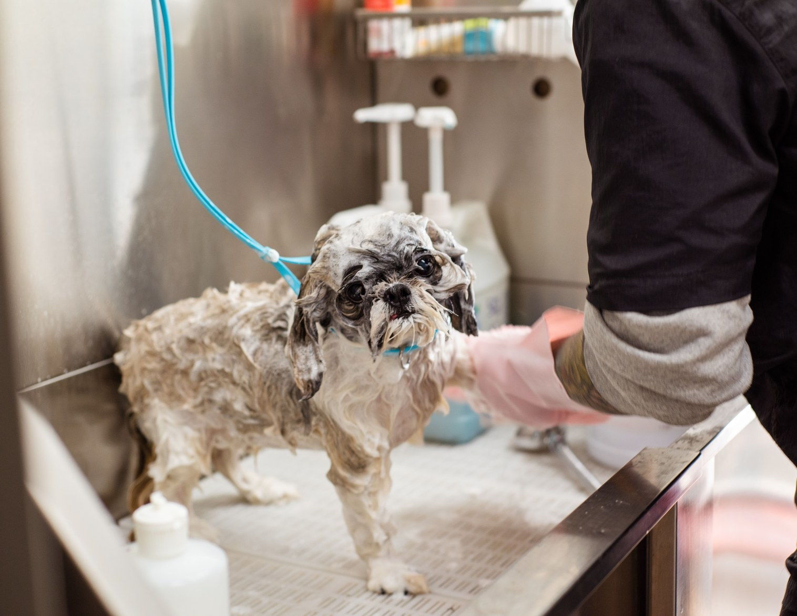
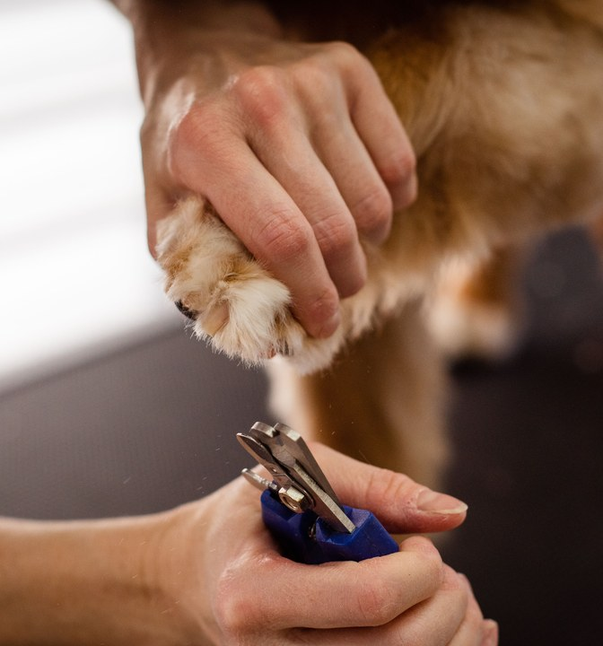
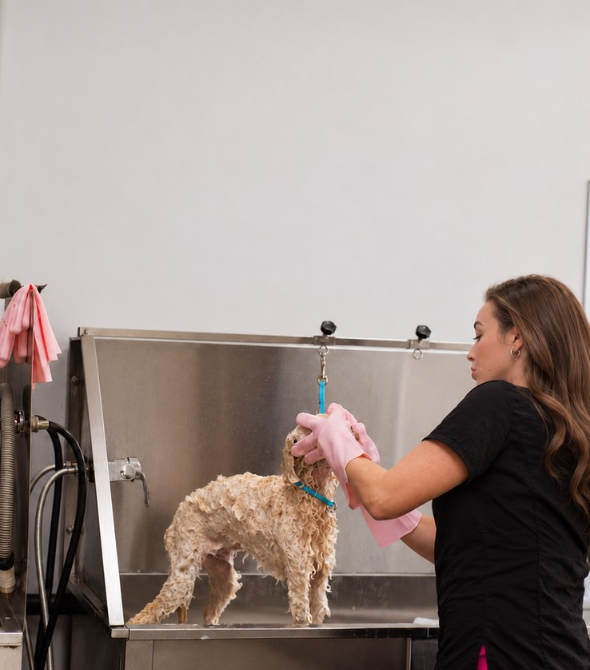
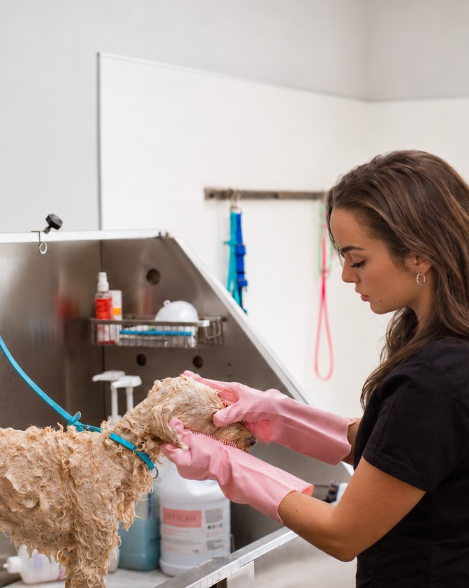
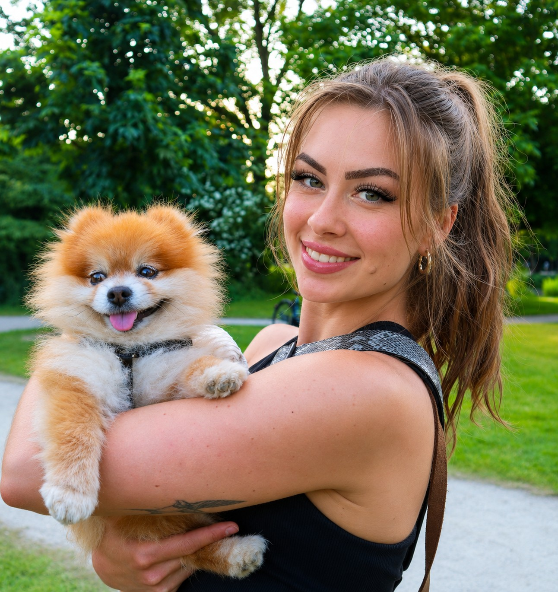

About Waggin with GG
Hi, I’m Georgia — your local dog groomer in Enfield providing calm, considerate, one-to-one grooming tailored to your dog’s coat, comfort and personality.




The values that guide our grooming hands
Commitment
Every appointment at Waggin with GG starts with a chat about what you want from the groom and how your dog feels around brushes, clippers or the dryer.
Personalised service
We work closely with you to agree on the right coat length, style and maintenance routine between appointments at Waggin with GG.
Passion
Whether it is a puppy’s very first bath or a senior dog needing extra patience, every dog is treated with genuine warmth and care.
Care
Your dog’s health, safety and comfort always come first in our calm, muzzle-free Enfield grooming salon.
Quality
We use gentle, dog-safe and hypoallergenic shampoos and conditioners suited to your dog’s specific skin and coat type.
Hygiene & safety
All grooming tools, tables and towels at Waggin with GG are thoroughly cleaned and sanitised between appointments for your dog’s wellbeing.

The story behind Waggin with GG
Waggin with GG was founded by Georgia in Enfield with a simple goal: to promote better health for your dog through patient, considerate grooming tailored to their individual needs. By taking the time to understand each dog’s temperament and coat before every session, Waggin with GG makes grooming a positive, reassuring experience.
One-to-one attention
Happy dogs & owners
Have any questions?
Here are answers to a few common questions about booking and preparing your dog for their appointment at Waggin with GG.
Simply get in touch via our booking or contact page with your dog’s breed, what you’d like done and a couple of dates that suit you. Georgia will reply with availability and a guide quote.
Please avoid feeding your dog less than 3 hours before their appointment and make sure they have had a toilet break before arrival. Bring your dog on a secure lead or harness and let Georgia know of any sensitivities.
Most dogs benefit from a full groom every 6 to 8 weeks, with a bath, blow-dry and brush-out in between to keep their coat tangle-free and healthy. Georgia can recommend a schedule suited to your dog’s breed and coat.
Yes — considerate, patient care is at the heart of Waggin with GG. Let Georgia know beforehand what your dog is usually like around brushes, clippers or the dryer so the session can be paced around their comfort.